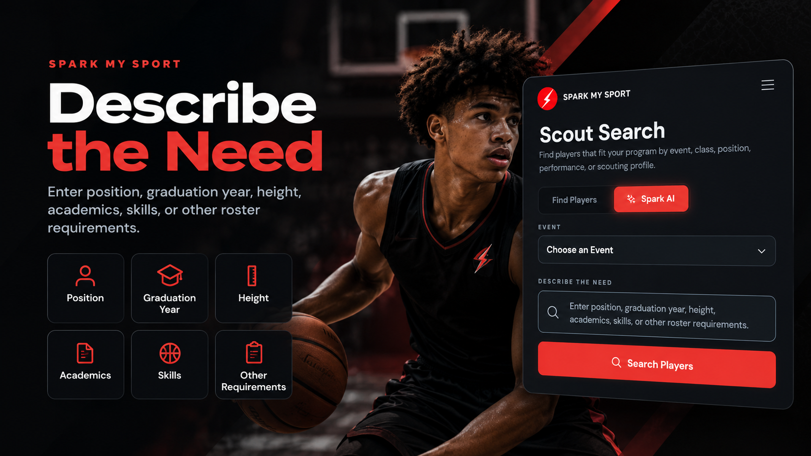
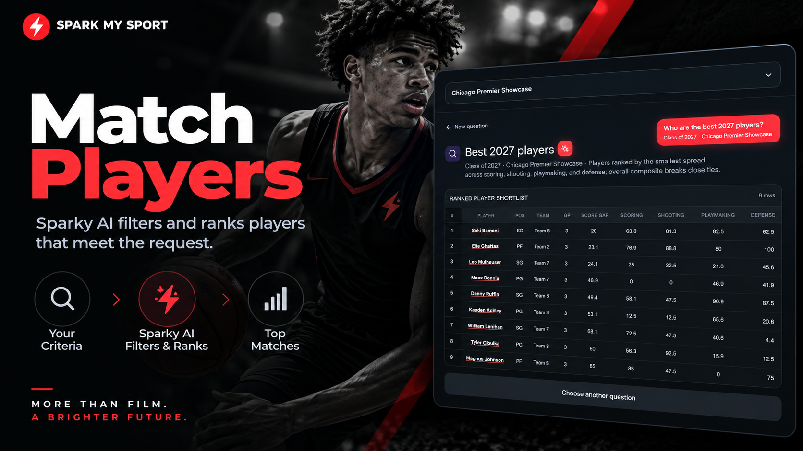
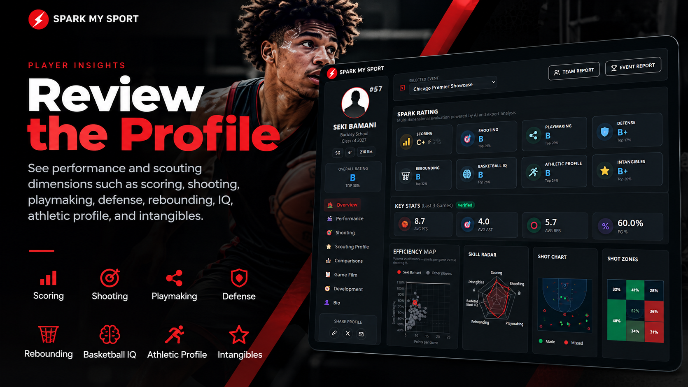
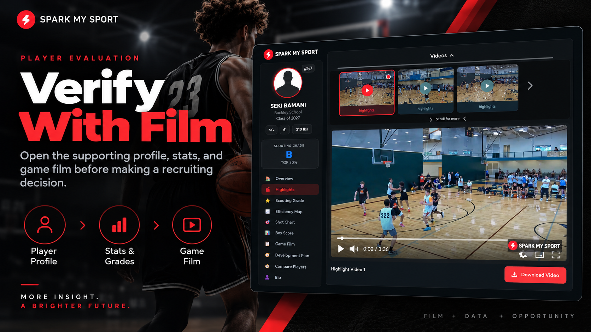

Use Sparky AI to search for players by position, graduation year, academics, size, playing style, and scouting criteria, then review the film-backed evidence.
Enter position, graduation year, height, academics, skills, or other roster requirements.

Sparky AI filters and ranks players that meet the request.

See performance and scouting dimensions such as scoring, shooting, playmaking, defense, rebounding, IQ, athletic profile, and intangibles.

Open the supporting profile, stats, and game film before making a recruiting decision.

The scouting grade gets attention. The supporting film and evaluation help the recruiter decide.